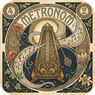

Polymetrický Metronom
PWA
Instalovat
Nastavení cyklu
Počet taktů
1 takt
2 takty
3 takty
4 takty
Metrum (Doby)
3/4 (Valčík)
4/4 (Základní)
5/4 (Liché)
6/8 (Složené)
7/8 (Balkán)
Polyrytmika
Tečkovaná osmina (3/16)
Tečkovaná čtvrťová (3/8)
Čtvrtková triola (3:2)
Osminová triola (3:1)
Pětidobá (5 nad cyklem)
Sedmidobá (7 nad cyklem)
Tečkovaná půlová (6 dob)
Zvukové stopy
Doby (Zvuk 1)
MUTE
Dřevěný Woodblock
Rimshot / Klik
Cowbell (Agogô)
Pípnutí / Beep
Hlasitost
Kontra (Zvuk 2)
MUTE
Cowbell (Zvon)
Kovové Clave
Dřevěný Block
Maracas / Shaker
Hlasitost
Tempo
-5
-1
120
BPM (čtvrťové)
+1
+5
TAP
SPUSTIT METRONOM
Cyklus: 2 takty (8 dob) • Tečkované osminy